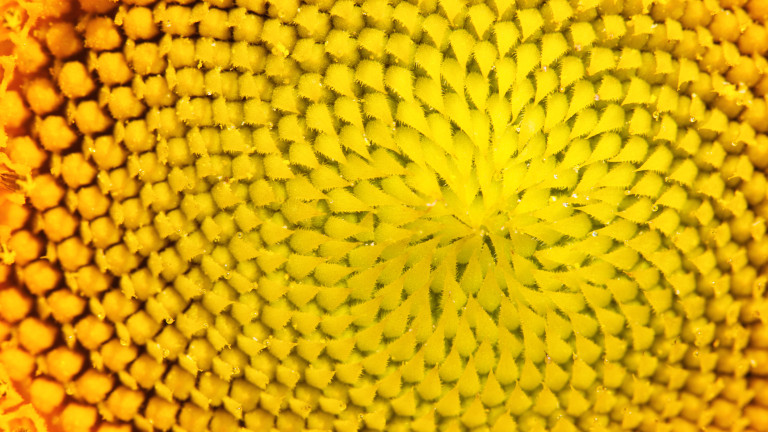

Фибоначи – кодът на вселената
Леонардо Фибоначи е италиански математик, работил през първата половина на XIII век. Определян като
„най-талантливият западен математик на Средновековието“, наред с останалите математици на своето време той
допринася за възраждането на класическите точни науки след техния упадък през Ранното Средновековие. Фибоначи
е
най-известен с популяризирането в Европа на арабските цифри, които използва в своя основен труд „Книга за
смятането“, както и на числовата редица, наречена по-късно на негово име числа на Фибоначи, която не е негово
откритие, но е използвана от него като пример в „Книга за смятането“.
Леонардо Фибоначи е роден около 1170 г. в Пиза в семейството на богатия търговец Гулиелмо деи Боначи. Докато
е
жив,
самият Леонардо използва името Леонардо Биголо, като едва след смъртта му започват да го наричат Фибоначи
(figlio
di
Bonacci, „син на Боначи“). Бащата на Леонардо е официален представител на търговците от Пизанската република в
Буджа, пристанище в днешен Алжир. През тези години Буджа е важно интелектуално средище и в града живеят видни
арабски учени. Като дете Леонардо живее там заедно с баща си, и още по това време се запознава с арабските
цифри.
След като установява, че аритметичните изчисления с арабски цифри са по-прости и ефективни, отколкото с римски
цифри, Фибоначи предприема пътувания в Средиземноморието – Египет, Сирия, Сицилия, Прованс, Цариград, за да се
учи
при водещите математици от това време. Той се връща в Италия около 1200 г., а през 1202 г. публикува наученото
в
своята „Книга за смятането“.

В своята „Книга за смятането“ Фибоначи представя т.нар. „индийски метод“, известен днес като арабски цифри.
Книгата
се застъпва за използването на десетична бройна система с позиционна номерация и демонстрира практическите
преимущества на този метод, прилагайки решетъчно умножение и египетски дроби в счетоводството, преобразуването
на
единици за измерване, изчисляването на лихви и обменни курсове. Освен използването на арабските цифри, книгата
включва и признаци за делимост, правила за изчисляване на квадратни и кубични корени, както и множество
примерни
задачи с техните решения. „Книга за смятането“ става популярна сред образованите кръгове в Западна Европа и
оказва
силно влияние върху развитието на западноевропейската мисъл.
Значението на числата на Фибоначи в математиката е толкова голямо, че и днес на тях е посветено самостоятелно
периодично издание, Fibonacci Quarterly. Неговото име носи и астероидът 6765 Фибоначи.
През далечната 1202 г. италианският математик и животновъд Леонардо Писано, в опит да пресметне колко зайци
ще
е
отгледал до края на сезона, прави определени изчисления и получава специфична поредица от числа, която
по-късно
става известна като числата или редицата на Фибоначи.
А последователността е следната: 1, 1, 2, 3, 5, 8, 13, 21, 34, 55, 89, 144 и така - до безкрайност. Формулата
е
проста - всяко следващо число е равно на сбора между предходните две, а съотношението между последните две
числа
в
редицата е невероятно близо до "златното сечение" (1.618).
"Златното сечение" е термин, въведен от Леонардо да Винчи, и се счита за божествена пропорция, която се среща
в
древногръцката архитектура, египетската култура и е в основата на философските въжделения на Питагор.
Истината е, че числата на Фибоначи се срещат в природата по най-различни и любопитни начини - явление, което
представлява главоблъсканица за учените от стотици години насам.

Подредбата на семките в слънчогледа е най-очевидният пример за това. Броят на спиралите в питата винаги е
равен
на
число на Фибоначи, а броят на сочещите наляво и тези на сочещите надясно спирали винаги е равен на две поредни
числа
на Фибоначи.
Същото явление може да се наблюдава и при формите на шишарката, ананаса, зелето и дори в черупките на
охлювите
и
подредбата на тичинки при цветята.
.jpg)
Но най-интересното е, че редицата на Фибоначи присъства и в биологичния дизайн на човека, като органите и
частите
на тялото следват последователността от 1, 2, 3 и 5. Ако погледнем ръката или краката си, ще установим, че те
се
състоят от три части и завършват с пет пръста. Големината на костите в крайниците и размера на фалангите в
пръстите
ни също са подвластни на тези пропорции.
.jpg)
Златното сечение съществува и в архитектурата още от древни времена. Примери за това са Египетските пирамиди,
Партенона в атинския Акропол, Парижката света Богородица и др.
Защо и как редицата на Фибоначи отразява кода на реалността ни, все още е толкова голяма гатанка, колкото е и
по
времето на Леонардо Писано.
Едно е сигурно - колкото повече се вглеждаме в природата и нейните форми, на толкова повече места
забелязваме,
че
съществуват математически закономерности, които ни карат да чувстваме, че всичко живо около нас е отлято по
сходен,
космически калъп.